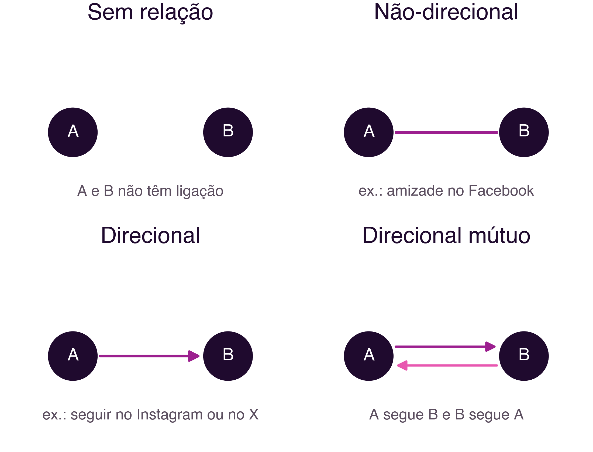
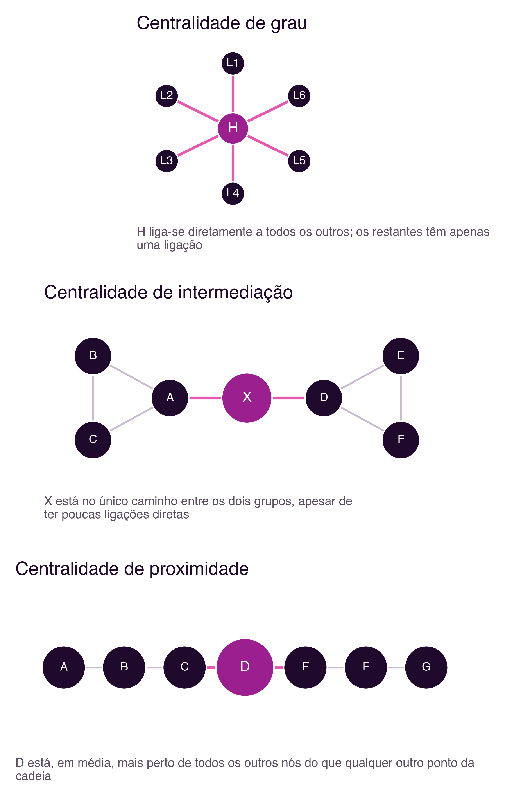
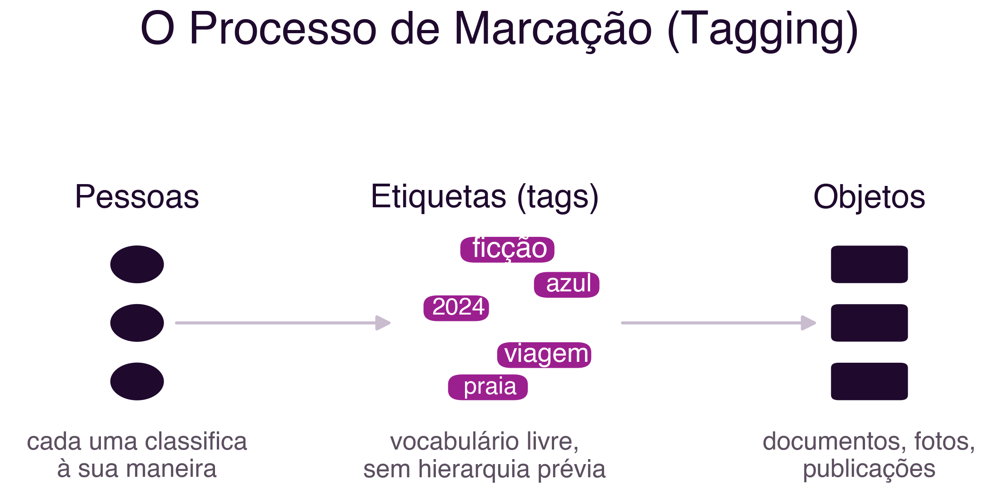
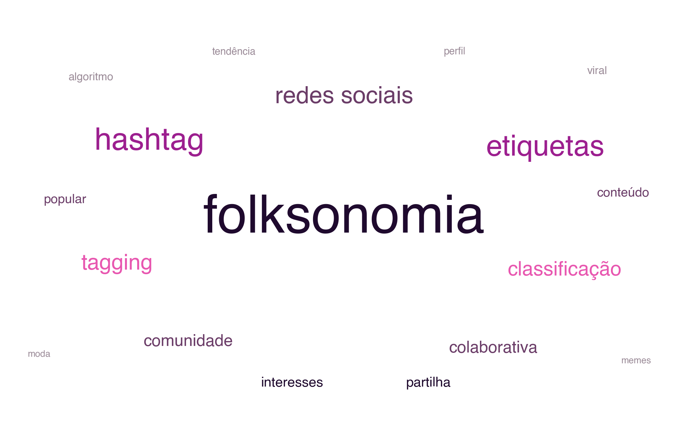

3 Social Networks: Metrics and Folksonomy
Social Networks: Metrics and Folksonomy
Introduction
The previous chapter introduced, alongside the social graph, a second model for organising information in social networks: the interest graph, in which the relevant proximity is no longer between people, but between a person and the topics they interact with (Section 2.2.1). This chapter develops that idea in two complementary directions. First, it shows how to formally analyse a social graph, through concrete metrics that make it possible to answer questions such as “who is most influential in this network?” or “how well connected is this community?”. Then, it explores the other side of the coin, the organisation of content by topic, through folksonomy, the collective classification that today structures practically every social network through hashtags.
3.1 Representing a Social Network as a Graph
Analysing a social network systematically requires, first of all, representing it as a graph: a set of nodes, representing people or organisations, connected by edges, representing their relationships. This is the same representational logic used by Moreno’s sociogram (Section 1.2.1) and by the social and interest graphs discussed in the previous chapter.
An edge, that is, a connection between two nodes, can be undirected, when it represents a mutual, symmetric relationship (for example, a friendship on Facebook, where both parties have to accept the connection), or directed, when it represents a relationship that only holds in one direction (for example, following someone on Instagram or X, which does not imply being followed back). Two people may also have no relationship at all. This distinction matters: most traditional friendship networks (Facebook, LinkedIn) use undirected connections, while most content-centred networks (Instagram, X, YouTube) use directed connections, which has direct implications for the metrics that follow (Figure 3.1).

3.2 Metrics for Social Network Analysis
Once represented as a graph, a social network can be analysed with quantitative metrics, a set of tools that make up Social Network Analysis (SNA). The most widely used metrics are as follows:
3.2.1 Path and distance
A path between two nodes is any sequence of edges connecting them, directly or indirectly. In a social network, there are typically many possible paths between any two nodes. Distance between two nodes is the length of the shortest path between them, measured by the number of edges traversed. It was precisely this notion of distance that Milgram’s experiment sought to measure empirically (Section 2.1): how many connections, on average, separate two randomly chosen people.
3.2.2 Centrality as Social Power
Centrality measures how well positioned a node is within the network, which is why it is also called social power. There is no single way to measure centrality: sociologist Linton Freeman proposed, in a work now considered foundational to the field, a conceptual clarification that distinguishes at least three distinct notions of centrality (Freeman 1978):
- Degree centrality: how many direct connections a node has. A node with many connections is, on the face of it, more central.
- Betweenness centrality: how often a node lies on the shortest path between two other nodes. A node with high betweenness centrality functions as a bridge or broker of information between parts of the network that would otherwise be more distant.
- Closeness centrality: how close, on average, a node is to all other nodes in the network. A node with high closeness centrality can reach the rest of the network quickly.
These three notions capture different aspects of “importance” in a network, and a node can be central by one measure and peripheral by another: a good example is an intermediary who links two distinct communities, but who, within each of them, has few direct connections, low degree centrality, but very high betweenness centrality (Figure 3.2).

3.2.3 Popularity: in-degree and out-degree
In directed graphs, it is useful to distinguish between connections arriving at a node and connections leaving it. In-degree is the number of connections arriving at a node, and is often used as a direct measure of popularity: on Instagram or X, it corresponds, essentially, to the number of followers. Out-degree is the number of connections leaving a node, corresponding, in that same example, to the number of accounts that user follows.
3.2.4 Density
The density of a node, or of a network, measures the proportion between the number of relationships that actually exist and the number of relationships that would be possible. If a node has only a third of the connections it could have, given the size of the network, its density is approximately 0.33 (Figure 3.3). High-density networks tend to spread information faster, but also to be more susceptible to echo-chamber effects, precisely because almost everyone is connected to almost everyone else.

3.3 Folksonomy: Collective Content Classification
So far, this chapter has dealt with how to analyse relationships between people. But much of the structure of a modern social network also results from how content is classified and organised, and this is where folksonomy comes in.
The term folksonomy was coined by Thomas Vander Wal in 2007, from the combination of folk (people) and taxonomy (Vander Wal 2007). It denotes the classification of content through a free, collective tagging process, rather than a hierarchy of categories defined a priori by domain experts.
The difference from a traditional taxonomy is structural: in a taxonomy, a group of managers defines a hierarchy of categories in advance, and all content has to fit into it. In a folksonomy, there is no such prior hierarchy: categories, or tags, emerge as users themselves classify content, with no centralised control.
The tagging process can be represented simply: a group of people, or a single person, associates a set of tags with a set of objects (documents, images, posts) (Figure 3.4). Because different people classify the same object in different ways, according to their own perspective, the resulting folksonomy is rich and heterogeneous, but can also contain inconsistencies.

Two types of folksonomy can be distinguished (Vander Wal 2007): broad folksonomy, in which a large number of users tag the same objects, which is useful for identifying the most popular items in a collection, and narrow folksonomy, in which only one or a few people tag each object, typically the content’s own author, which preserves a more personal vocabulary, but makes discovery by others harder.
A common way to visualise the aggregate result of a folksonomy is the tag cloud, a representation in which the most-used tags stand out, typically in larger or darker type, making it possible to quickly identify the dominant themes of a collection (Figure 3.5).

3.3.1 Advantages and problems
Folksonomy has clear advantages: it does not depend on domain experts to define categories, it lets each user classify freely without having to learn a controlled vocabulary, and it captures the real vocabulary of those who actually use the system, not that of those who designed it.
But that same freedom generates well-documented problems: spelling mistakes, morphological variation (for example, “social network” and “social networks” recorded as distinct tags), synonymy (different terms for the same concept), polysemy (the same term with different meanings depending on context), and clutter from low-relevance tags. Current platforms partially mitigate these problems with automatic spell-checking, suggestions of tags already used by others, and semi-automatic grouping of semantically close tags.
3.5 Summary
This chapter developed two complementary tools for understanding the structure of social networks:
- A social network can be represented as a graph, with directed or undirected edges depending on the type of relationship
- The main analysis metrics are path, distance, centrality (degree, betweenness and closeness) (Freeman 1978), in-degree and out-degree, and density
- Folksonomy is the collective classification of content through free tagging, distinct from a hierarchical taxonomy defined a priori (Vander Wal 2007)
- Broad and narrow folksonomy represent a trade-off between reach and precision of classification
- The hashtag is the contemporary form of folksonomy, present in practically every current social network (Ibba et al. 2015)
3.6 Food for Thought
Think of a social network you use often: among the people you follow, can you identify someone with high betweenness centrality, that is, someone who links groups of people who would not otherwise be in contact?
And what about the hashtags you use or follow: are they broad folksonomy, a generic tag used by millions of people, or narrow folksonomy, specific to a small community? What problems of synonymy or morphological variation have you already noticed in hashtags (for example, two different spellings of the same topic splitting the same conversation into two)?